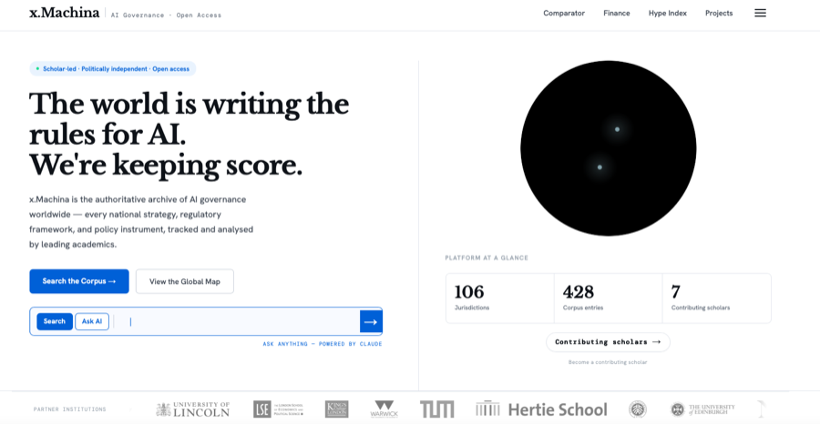

Policy Engagement
I am the co-creator of x.Machina, an open-access archive documenting the evolution of AI strategies and regulations across 100+ jurisdictions. The platform serves as a central repository for over 400 policy instruments.

Drawing on the x.Machina corpus, I have co-authored two recent studies. The first provides a comparative analysis of AI strategies in the United States, China, and Scotland [read the full article here]. The second identifies four distinct archetypes in how governments worldwide design their AI strategies [read the full article here].